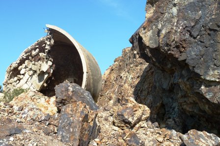
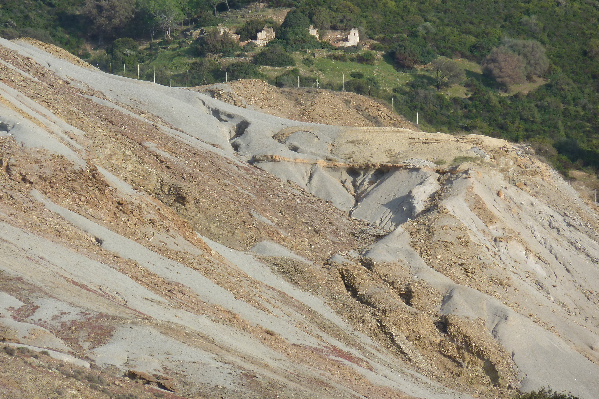
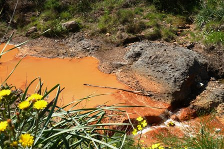
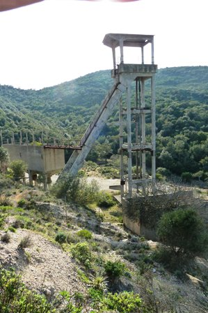
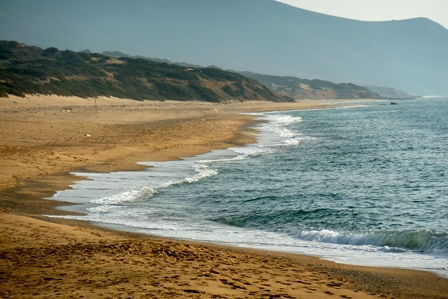

Dicevo l'altra volta che nel mio breve tour della Sardegna non avrei avuto quella mezza giornata a disposizione per cercare nella profumata macchia sarda la miniera di Zurufusu: infatti così è stato.
Sono riuscito tuttavia a percorrere quella bellissima stradina sterrata, tutta curve e buche, che conduce da Montevecchio a Ingurtosu e poi alle dune di Piscinas, totalmente immersa in questa vasta area mineraria del Sulcis.
L'esperienza è veramente suggestiva, vuoi per lo splendido ambiente geomorfologico vuoi per la singolarità del complicatissimo complesso di vecchie miniere disperse dovunque quasi ad ogni giro d'occhio.
Naturalmente dalla strada non si vedono i "buchi" (ora messi in sicurezza in una vastissima zona recintata) ma un gran numero di ruderi di antiche costruzioni, disperse come fantasmi nella valle, che ne testimoniano la presenza sotterranea.
Sono vecchie case di minatori, ora cadenti e sbudellate, semisepolte in un groviglio di lentischi, mirti e ginestre, che appaiono anche sulla cima di improbabili lontane colline: prova che perfino lassù c'era una galleria dal quale estrarre galena e blenda.
Lascio ad altri ben documentati siti (che ho già citato) la storia interessantissima di queste miniere di Sardegna, sfruttate dai tempi più antichi fino alla loro drammatica chiusura avvenuta appena una ventina di anni fa.
Sì, drammatica: hanno segnato la fine del lavoro per migliaia di minatori.
Sono passati appena un paio di decenni e percorro la strada del Rio Piscinas circondato dagli scheletri delle case, dei pozzi e delle laverie; finalmente al mare, sul molo diroccato delle dune di Piscinas: perdo la cognizione del tempo, potrebbero essere passati non vent'anni ma cento!
Ma sono appena sulla strada, dove qualche macchina passa ancora; se faticosamente m'inerpicassi fin su quella collina lontana, dove vedo emergere un rudere, sarei veramente fuori dal tempo...

Ingurtosu, oggi

Resti di impianti e mineralizzazioni a blenda

Ruderi e discariche non mineralizzate

Ossidi di ferro nel Rio di Montevecchio

Fantasmi industriali lungo la strada Montevecchio-Ingurtosu

Alle dune di Piscinas: qui si imbarcava il minerale di piombo e zinco
2 commenti